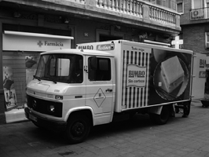

Creació i posada en funcionament de l'empresa
Les diferents formes de constitució d’una empresa comporten unes obligacions a les persones que formen l’empresa que fan més o menys dificultosa la seva realització. Això ens porta a tenir en compte els avantatges i inconvenients que cada forma de constitució d’empresa té.
L’elecció de la forma jurídica de les empreses depèn dels avantatges i inconvenients de la regulació de cada forma jurídica. Això ens porta a veure quins són els avantatges i inconvenients de les diferents formes jurídi- ques d’empresa (taula).
| Forma jurídica | Avantatges | Inconvenients |
|---|---|---|
| Empresari individual | Tràmits senzills de constitució. No existeix capital social mínim. Avantatges en l’IRPF. Ajuts públic per a la seva constitució. | Responsabilitat il·limitada per la qual cosa arrisca tot el seu patrimoni. |
| Societat limitada | Responsabilitat limitada dels socis i el seu patrimoni no es veu compromès. Socis registrats. Òrgans de funcionament senzills. | Les participacions no es poden transmetre lliurement. No poden cotitzar en borsa. Auditories de comptes. |
| Societat anònima | Constitució i transmissió facilita l’acumulació de capital. Responsabilitat limitada dels socis i el seu patrimoni no es veu compromès. Fàcil transmissió de les accions. | Capital social mínim més elevat. Costos de constitució més elevats. Funcionament més complex. No es controla el capital per la facilitat en la transmissió d’accions. Auditoria de comptes. |
Constitució de l'empresa
Per començar a treballar qualsevol empresa necessita complir una sèrie d’obligacions formals i burocràtiques que portaran a la seva plena integració dins del mercat en què es trobi. Aquestes obligacions consten d’uns tràmits de caràcter general per a tot tipus d’empresa i d’altres que són específics, depenent de la forma jurídica escollida pels seus integrants.
Els tràmits que les empreses han de complir per a la seva constitució comporten la formalització d’una documentació diversa. Aquesta documentació també difereix si l’empresa és individual o bé si és una societat i, dins d’aquesta, si és una societat mercantil o no. En tot cas, la documentació bàsica que es requereix per constituir l’empresa passa perquè l’empresa consti en els organismes que, per raó de les obligacions de l’empresa, han de conèixer de la seva existència. Una vegada l’empresa s’ha constituït, el Ministeri d’Economia i Hisenda ha de saber que hi ha una empresa que ha de complir les seves obligacions fiscals. També l’Ajuntament de la localitat, la Seguretat Social i el registre mercantil han de tenir coneixement de la seva existència.
Tràmits generals per posar en marxa l'empresa
Els primers tràmits per posar en marxa l’empresa es fan a l’Agència Tributària i serveixen perquè aquest organisme conegui l’empresa que s’ha constituït, aspecte que es compleix mitjançant la declaració censal, per saber quin tipus d’empresa és i quines obligacions fiscals tindrà en el seu exercici; un altre requisit que s’ha de complir és la declaració d’alta de l’IAE. L’Ajuntament regula l’empresa, bàsicament, en la seva vessant d’instal·lacions i també d’activitats, per la qual cosa ha de saber si l’empresa duu a terme algun tipus d’activitat que no està permesa a la localitat o necessita requisits específics. Tota la tramitació davant el Ministeri de Treball i Seguretat Social va referida a la inscripció i alta de l’empresa i els seus treballadors a la Seguretat Social per saber quines obligacions i drets tenen des del punt de vista sanitari i de prestacions de la Seguretat Social. Per acabar, el registre mercantil dóna informació de les empreses que s’hi han d’inscriure pel que fa a la manera en què estan constituïdes, la seva activitat i els seus resultats.
Hi ha la possibilitat de simplificar la gestió d’aquests tràmits mitjançant un servei de finestra única que porten a terme les cambres de comerç i que ajuda aquells empresaris que vulguin crear una societat limitada nova empresa a realitzar tots aquests tràmits a través de les oficines de les cambres de comerç.
En la taula podem veure esquemàticament els diferents tipus de tràmits a efectuar segons l’organisme oficial que intervé.
| Agència Tributària | Ajuntament | Ministeri de Treball i Afers Socials | Registre Mercantil |
|---|---|---|---|
| Declaració censal (model 036 o 037) | Llicència d’activitats i instal·lacions | Inscripció de l’empresa a la Seguretat Social | Documentació social |
| Declaració d’alta a l’impost sobre activitats econòmiques (IAE). | Llicència d’obres | Alta en el règim d’autònoms de la Seguretat Social | Documentació comptable |
| Presentació dels llibres a Hisenda | Alta en el règim general de la Seguretat Social | ||
| Comunicació d’obertura del centre de treball |
Els tràmits que s’han de dur a terme per a la constitució d’una empresa no solament impliquen l’Administració central, sinó també l’Administració local, ja que aquesta té una actuació molt rellevant en la constitució de les empreses que s’instal·len al seu terme municipal.
1) Tràmits al Ministeri d’Economia i Hisenda
La realització dels diferents tràmits en el Ministeri d’Economia i Hisenda per posar en marxa una empresa es poden fer en qualsevol de les delegacions territorials que té aquest organisme. Aquests tràmits consisteixen en la presentació de la declaració censal, de l’alta de l’impost sobre activitats econòmiques i de la presentació dels llibres a Hisenda i s’han d’aportar els documents següents (vegeu figura):
- Declaració censal. La declaració censal és un document on es fa un resum de l’empresa i de les seves obligacions fiscals. Es presenta a l’inici de l’activitat en el model 036 o 37 i s’aporta la fotocòpia del DNI, si és persona física, o CIF, si és persona jurídica, i l’alta de l’impost sobre activitats econòmiques.
- Declaració d’alta a l’impost sobre activitats econòmiques (IAE). L’impost sobre activitats econòmiques (IAE) és un tribut que grava l’exercici de les activitats empresarials, professionals o artístiques. La declaració d’alta de l’IAE s’ha d’efectuar en un termini de 10 dies hàbils abans de l’inici de l’activitat i s’ha d’emplenar el model 840 i aportar, si s’escau, el DNI o CIF.
Vegeu els models 036 i 037 a la secció “Annexos” del web del mòdul.

2) Tràmits a l’Ajuntament
Els diferents tràmits a l’ajuntament de la localitat on s’ubica físicament l’empresa s’han de portar a terme en les seves dependències, normalment a la gerència municipal d’Urbanisme, on es tracta de totes les situacions relacionades amb l’edificació i instal·lació d’activitats empresarials i, d’altra banda, a la regidoria de Medi Ambient en aquells casos en què la instal·lació de l’empresa comporti riscos mediambientals.
En la majoria d’ajuntaments existeixen uns requisits específics per a la instal·lació d’empreses, sobretot en l’àmbit industrial, ja que aquestes només es poden instal·lar en zones establertes per a aquests fins, com ara els polígons industrials, i se’ls requereix una normativa estricta en temes de contaminació, soroll i emissió de gasos, per exemple.
Els tràmits que s’han de portar a terme a l’Ajuntament són la llicència d’activitats i instal·lacions i la llicència d’obres.
- Llicència d’activitats i instal·lacions. La llicència d’activitats i instal·lacions acredita que les instal·lacions de l’empresa compleixen la normativa urbanística vigent i, si s’escau, els reglaments tècnics que puguin ser d’aplicació.
Les activitats i instal·lacions innòcues són aquelles que no produeixen molèsties ni dany.
El tràmit de la llicència d’activitats i instal·lacions innòcues requereix la presentació del següent:
- L’alta de l’IAE.
- Contracte d’arrendament o escriptura de propietat del local.
- DNI del sol·licitant o escriptura de societat i CIF.
- Memòria descriptiva de l’activitat i del local.
- Plànols del local.
- Plànol de la situació del local.
- Pressupost de les instal·lacions.
El tràmit de la llicència d’activitats i instal·lacions qualificades requereix la presentació de tots els documents que s’han de presentar per a la llicència d’activitats i instal·lacions innòcues, a més del següent:
- Projecte de les instal·lacions signat per un tècnic i visat pel col·legi professional corresponent que n’inclogui els plànols, el pressupost i la memòria.
- Relació de veïns afectats i continus a l’empresa.
- Llicència d’obres. La llicència d’obres és un document que necessita l’empresa en el cas que hagi de fer obres al local on desenvoluparan les seves activitats. Per demanar la llicència d’obres, l’empresa ha d’aportar la documentació següent:
- Pressupost de les obres.
- Plànol de l’estat actual i d’allò que es reforma.
- Memòria descriptiva de les obres.
- Plànol parcel·lari de la finca on es troba situat el local de l’empresa.
- Si les obres afecten algun element estructural de la finca, caldrà la presentació d’un projecte visat pel col·legi professional corresponent.
3) Tràmits al Ministeri de Treball i Seguretat Social
Els tràmits davant del Ministeri de Treball i Seguretat Social s’han de portar a terme a la Tresoreria General de la Seguretat Social de la localitat corresponent i tenen a veure amb la inscripció de l’empresa i l’alta dels treballadors per compte aliè o per compte propi en els diferents règims de la Seguretat Social per poder tenir establertes quines són les obligacions i els drets de l’empresa i de les persones que hi treballen. Aquests tràmits s’han de realitzar abans de l’inici de l’activitat i si no es produeix aquesta tramitació, l’empresa incorre en responsabilitats davant la Seguretat Social.
Els tràmits a realitzar en el Ministeri de Treball i Seguretat Social són:
- Inscripció de l’empresa en la Seguretat Social. La inscripció de l’empresa en la Seguretat Social és obligatòria per a qualsevol empresari que hagi de fer contractacions. La inscripció s’ha de fer abans de l’inici de l’activitat que hagi de desenvolupar l’empresa.
- Alta en el règim d’autònoms de la Seguretat Social. És obligatòria per a empresaris individuals; socis de companyies col·lectives i comanditàries; socis de comunitats de béns i societats civils i socis administradors de societats mercantils.
- Alta en el règim general de la Seguretat Social. És obligatori per a treballadors per compte d’altri. S’ha d’efectuar abans de l’inici de l’activitat.
- Comunicació d’obertura del centre de treball en la conselleria de treball de la comunitat autònoma. És obligatori per a empreses que obrin un centre de treball.
4) Tràmits davant del registre mercantil
Els tràmits davant del registre mercantil es fan des de dues vessants: l’aportació de la documentació social per donar a conèixer quina és l’organització i l’activitat de l’empresa que s’inscriu en el registre i la documentació comptable per saber quins són els resultats de l’activitat empresarial d’aquestes empreses, informació important per a les persones que volen tenir relacions comercials amb aquestes empreses.
Es realitzen dos tipus de tràmits:
- La documentació social: s’aporten els llibres d’actes de totes les societats. Les societats limitades, anònimes i cooperatives aportaran els llibres específics que estiguin obligats a portar.
- La documentació comptable: les societats aportaran el llibre diari i el llibre d’inventaris i comptes anuals.
Tràmits específics per a la posada en marxa d'una empresa
Hi ha diferents tràmits per a la posada en marxa d’una empresa depenent del tipus de forma jurídica que tingui l’empresa. Les obligacions específi- quesi tràmits que s’estableixen per a les diferents formes jurídiques són les següents:
- Per a l’empresari individual. Només es necessita el DNI de l’empresari individual.
- Per a una comunitat de béns. El DNI dels socis i el contracte de constitució.
- Per a les societats mercantils. Es necessita la documentació següent:
- Certificació negativa de la denominació social.
- Obertura del compte bancari.
- Estatuts de la societat.
- En les societats laboral i cooperativa, la sol·licitud de la qualificació del projecte d’estatuts.
- Escriptura pública de constitució.
- Pagament de l’impost de transmissions patrimonials i actes jurídics documentats.
- Sol·licitud del codi d’identificació fiscal (CIF).
- La inscripció en diversos registres.
Els tràmits que han de realitzar les societats mercantils són els següents:
1) Certificació negativa de la denominació social
La certificació negativa de la denominació social és un document que se sol·licita al registre corresponent i que ratifica que el nom que es vol posar a la societat no el porta cap altra societat.
La certificació negativa de la denominació social es demana al Registre Mercantil Central en el cas de les societats mercantils. Al Ministeri de Treball i Seguretat Social en el cas de les cooperatives.
La sol·licitud ha de contenir les dades personals del sol·licitant i un màxim de cinc noms diferents per a la societat que s’ha de constituir.
Requisits del nom de la societat
Pot estar format per les lletres de l’alfabet de qualsevol de les llengües oficials de l’Estat espanyol i pot incloure nombres.
El nom ha d’incloure l’abreviatura de la forma jurídica adoptada.
No s’autoritzen noms contraris a la llei, l’ordre públic o els bons costums.
La denominació no pot estar formada de manera exclusiva amb el nom d’Espanya, les seves institucions ni organismes de les administracions públiques.
Es prohibeixen les denominacions que puguin induir a error amb una altra que ja existeix en el món mercantil.
El Registre emet, en el termini d’una setmana, el certificat negatiu de denominació social i reserva el nom en l’ordre que s’hagi establert. Aquest certificat ha de ser renovat cada dos mesos (quatre en el cas de cooperatives) mentre no es constitueixi la societat i caduca definitivament als quinze mesos.

2) Obertura del compte bancari
En determinades societats és necessari un capital mínim per constituir-se i aquest ha d’estar dipositat en un compte corrent.
Pot obrir el compte corrent la persona responsable de la societat. Si hi ha més d’un soci, és necessària la presència de tots ells o bé només d’un, sempre que es presenti per escrit la cessió de poders dels altres socis i la seva qualitat de representant.
Una vegada obert el compte bancari, el banc emet un certificat de dipòsit que es lliurarà al notari perquè es pugui atorgar l’escriptura.
3) Estatuts de la societat
Els estatuts de la societat són una part de l’escriptura on s’estableixen les normes que seran d’aplicació en la vida de la societat.
Els estatuts es redacten quan l’empresa coneix el local social on durà a terme les seves tasques perquè aquesta és una informació que ha de figurar en els estatuts. El contingut mínim dels estatuts és el següent:
- La denominació de la societat.
- L’objecte social que es proposa.
- La durada de la societat.
- La data en què comença la seva activitat empresarial.
- El domicili social.
- El capital social.
- La forma de divisió del capital social.
- La manera d’organitzar l’administració de la societat, el nom dels administradors i les seves funcions.
En la secció “Annexos” del web del mòdul trobareu un model d’estatuts socials d’una empresa.
4) Sol·licitud de qualificació del projecte d’estatuts. Aquest tràmit l’han de sol·licitar les societats laborals, societats anònimes laborals i les cooperatives. Es presenta la sol·licitud davant l’Administració central o, si és procedent, davant l’òrgan administratiu competent a la comunitat autònoma.
5) Atorgament d’escriptura pública de constitució
L’atorgament d’escriptura pública de constitució és un acte fet davant d’un notari en què els socis fundadors procedeixen a la signatura de l’escriptura pública de constitució de la societat.
El contingut de l’escriptura de constitució de la societat és el següent:
- La identitat del soci o socis.
- La voluntat de constituir una societat.
- Les aportacions que cada soci realitza.
- Els estatuts de la societat.
- La identitat de la persona o persones que s’encarreguin inicialment de l’administració i representació de la societat.
- Els pactes i condicions que els socis considerin convenients, si no s’oposen a les lleis ni contradiuen els principis configuradors de la forma social triada.
- Si en els estatuts es preveuen formes alternatives d’administració de la societat, l’escriptura estableix quina serà la primera que s’utilitzarà en la societat.
El sol·licitant fa lliurement l’elecció del notari i la minuta s’estableix d’acord amb els mínims i màxims que determini el Col·legi de Notaris. No hi ha un termini definit per fer aquest tràmit; únicament s’ha de tenir en compte la caducitat de la certificació negativa de denominació social i la data del començament de les operacions de l’empresa.
6) Pagament de l’impost sobre transmissions patrimonials i actes jurídics documentats
Aquest impost grava la constitució de la societat i la seva quantia és l’1% sobre l’import del capital social.
S’abona al Servei Territorial del Departament d’Economia i Finances de la Generalitat de Catalunya abans d’un mes des de l’atorgament de l’escriptura pública.
S’ha de formalitzar mitjançant l’imprès 600.
7) Sol·licitud del codi d’identificació fiscal (CIF)
Aquest codi identifica la societat amb les seves relacions amb Hisenda.
Se sol·licita a l’Administració o delegació de l’Agència Estatal de l’Administració Tributària corresponent.
S’ha d’emplenar l’imprès model 036 o 037 i s’ha d’aportar una còpia de l’escriptura de constitució i fotocòpia del DNI del sol·licitant i, en el cas de les cooperatives, s’ha d’adjuntar la sol·licitud de la qualificació-classificació fiscal.
8) Inscripció en registres
En la secció “Annexos” del web del mòdul podeu trobar l’imprès model 600.
S’ha d’inscriure en el Registre Mercantil de la província.
S’ha de presentar l’original de l’escriptura de constitució després d’haver pagat l’impost de transmissions patrimonials. En el cas de les cooperatives, s’han de presentar tres còpies simples de l’escriptura de constitució i una d’autoritzada i la declaració de l’activitat que desenvoluparan. Les SAL i SLL han d’efectuar, prèviament, la inscripció en el Registre de la Direcció General de Cooperatives i Societats Laborals del Departament de Treball de la Generalitat de Catalunya.
Quan s’hi hagi inscrit la societat, el Registre lliurarà l’escriptura en què constaran el tom, el foli i el full on ha quedat inscrita la societat en qüestió. Totes aquestes dades s’han de posar de manera obligatòria en tota la documentació comercial que emeti la societat.
El tràmit d’inscripció en el Registre s’haurà d’efectuar dins del mes següent a l’atorgament de l’escriptura, excepte les societats laborals i les cooperatives, que ho podran fer en el termini de dos mesos. La inscripció en el registre mercantil comporta el pagament de les despeses dels honoraris del registrador i la publicitat en el BORME (Butlletí Oficial del Registre Mercantil), on es fa pública la constitució de la societat i les seves dades més essencials.
Sistemes de tramitació per a la constitució d'empreses
Els tràmits per a la constitució d’una empresa poden ser complexos i llargs en el temps. Per aquest motiu, s’han implantat diferents sistemes per agilitar aquesta tramitació aprofitant l’ús creixent de les noves tecnologies i la possibilitat d’unificar la tramitació que s’ha de fer en diferents administracions per mitjà de la figura de la finestreta única.
Finestreta Única Empresarial
El concepte de finestreta única es basa en un model integrat d’atenció ciutadana en l’àmbit territorial de Catalunya, amb l’objectiu que la ciutadania pugui presentar sol·licituds i comunicacions que s’adrecin a qualsevol organisme de l’Administració General de l’Estat, de la Generalitat de Catalunya o altres entitats públiques des de les Oficines d’Atenció Ciutadana de les administracions més properes, com ara els ajuntaments.
Objectius de la finestreta única
- Facilitar la tramitació en un únic espai físic.
- Informar i orientar l’emprenedor en altres aspectes a més de la tramitació.
La finestreta única és una iniciativa de les administracions públiques (estatal, autonòmica i local) i les cambres de comerç per facilitar la constitució d’empreses.
El funcionament de la finestreta única inclou tres àrees:
- La informació i la direcció del servei a l’emprenedor.
- L’orientació i l’assessorament sobre diferents aspectes del seu projecte d’empresa.
- La tramitació per a l’adopció de la personalitat jurídica de l’empresa i aquells tràmits generals per a la posada en marxa.
Oficina de Gestió Empresarial
L’OGE és l’oficina de la Generalitat de Catalunya que s’encarrega d’informar, assessorar, rebre, iniciar, gestionar i resoldre aquells tràmits per obrir, ampliar, modificar dades o traslladar activitats empresarials que afecten a diferents Departaments.
Constitució d'empreses per via telemàtica
Canal Empresa: Web de la Generalitat de Catalunya que permet informar-se i realitzar determinats tràmits telemàticament.
Centro de Información y Red de Creación de Empreses (CIRCE): és un sistema d’informació que permet realitzar telemàticament els tramits de constituació i posada en funcionament de determinades societats mercantils en Espanya.
Es poden crear a través de CIRCE:
- Societat Limitada Nova Empresa (SLNE)
- Societat de Responsabilitat Limitada (SRL o SL)
- Empresari Individual (Autònom)
El principal avantatge del CIRCE és que agilitza el procès de creació d’una empresa.
Document únic electrònic
Inclou els tràmits següents:
- Reserva de denominació social (SLNE).
- Cita amb el notari.
- Recollida de dades per a l’escriptura.
- Sol·licitud de CIF provisional.
- Declaració censal.
- Liquidació d’ITP/AJD.
- Inscripció de la societat en el registre mercantil.
- Tràmits de la Seguretat Social.
- Sol·licitud de CIF definitiu.
- Inscripció de fitxers en l’APD i alta del domini a Internet.
Gestió d'ajuts i subvencions
Les ajudes i subvencions són prestacions que proporcionen o faciliten l’obtenció de mitjans financers a l’empresa per part dels poders públics (taula) i, en alguns casos, privats.
La subvenció (taula) és tota aquella disposició dinerària realitzada per les administracions públiques a favor de persones privades o públiques i que reuneixen principalment tres requisits:
- El lliurament s’ha de fer sense contraprestació directa a favor de l’Administració.
- Els fons s’han de destinar a fomentar i finançar determinades activitats o comportaments del beneficiari.
- L’òrgan que concedeix la subvenció ha de considerar i acreditar que aquestes activitats o comportaments són d’interès general o d’utilitat pública.
| Organismes | |
|---|---|
| Unió Europea | Destina quantitats de diners impulsant programes i serveis d’ajuda a l’activitat empresarial o bé subvencionant projectes empresarials, especialment si són innovadors. |
| Administració central | Són ajudes o subvencions que el Govern dóna per a tot l’Estat espanyol i que poden ser finançades conjuntament amb la UE. |
| Comunitats autònomes | Tenen l’àmbit d’actuació de la CA i poden ser complement de les ajudes estatals o bé supleixen la carència en l’àmbit estatal d’algun supòsit. |
| Ajuntaments | Els ajuntaments poden constituir ajuts relacionats amb l’atorgament de llicències, gestió i tramitació de permisos. |
| Forma | Descripció |
|---|---|
| Subvencions financeres | Lliurament d’una quantitat per finançar algun element de l’empresa a fons perdut. |
| Préstecs | Finançament mitjançant un préstec a baix interès. |
| Bonificacions | En les quotes de la Seguretat Social, l’empresari pot obtenir una bonificació d’un percentatge en la cotització de determinats treballadors. |
| Descomptes | Rebaixes en el preu de determinats materials i equips. |
| Rebaixes o exempcions en impostos i tributs | S’estableixen reduccions o bé es declara que un empresari no pagarà determinats tributs o impostos segons determinades circumstàncies. |
| Cessió d’immobles o terrenys | Es donen terrenys o immobles a títol gratuït o en condicions molt favorables per afavorir l’establiment d’empreses. |
Resum dels tràmits administratius per a la constitució d'una empresa
Qualsevol empresa, per començar a treballar, necessita complir una sèrie d’obligacions formals i burocràtiques que la portaran integrar-se plenament dins del mercat en què es trobi. Aquestes obligacions consten d’uns tràmits de caràcter general per a tot tipus d’empresa i d’altres que són específics, depenent de la forma jurídica escollida pels integrants de l’empresa.
Els tràmits que les empreses han de complir per a la seva constitució comporten la formalització d’una documentació diversa. Aquesta documentació també difereix si l’empresa és individual o bé si és una societat: i si és una societat, i si és mercantil o no. En tot cas, la documentació bàsica que es requereix per constituir l’empresa passa perquè l’empresa consti en els organismes que, per raó de les obligacions de l’empresa, han de conèixer de la seva existència. Una vegada l’empresa s’ha constituït, el Ministeri d’Economia i Hisenda ha de saber que hi ha una empresa que ha de complir les seves obligacions fiscals. També l’ajuntament de la localitat, la Seguretat Social i el Registre Mercantil han de tenir coneixement de la seva existència.
En la taula, la taula, la taula, la taula i la taula trobareu un resum de tots els tràmits administratius necessaris per a la posada en marxa d’una empresa.
| Tràmits | Descripció | Tipus d’empresa |
|---|---|---|
| Afiliació i número de la Seguretat Social | Acte administratiu pel qual la Tresoreria General de la Seguretat Social reconeix a la persona física la inclusió per primera vegada en el sistema de la Seguretat Social. | Totes |
| Comunicació d’obertura del centre de trava | Empreses que inicien l’obertura del centre de treball o reprenen l’activitat. | Totes |
| Alta en el règim especial d’autònoms de la Seguretat Social | Règim obligatori per a empresaris individuals i comunitats de béns i opcional per a treballadors de cooperatives. L’afiliació i alta es faran dins dels 30 dies naturals següents a l’alta en l’IAE. | Persones físiques i opcional per a socis de cooperatives |
| Tràmits | Descripció | Tipus d’empresa |
|---|---|---|
| Alta en el règim general de la Seguretat Social | Règim general per a treballadors per compte aliè. L’afiliació i alta seran prèvies al començament de la relació laboral. | Totes |
| Alta en el cens | Declaració censal de començament, modificació o cessació d’activitat que han de presentar a efectes fiscals els empresaris individuals, els professionals i les societats. Totes llibre. | Totes |
| Tràmits | Descripció | Tipus d’empresa |
|---|---|---|
| Adquisició i legalització del llibre de visites | Llibre en què s’anoten les diligències que practiquen els inspectors de Treball després del resultat de les visites fetes a l’empresa. | Totes |
La llei 23/2015 de 22 de juliol ordenadora del Sistema d’Inspecció de treball i seguretat social, ha modificat l’obligatorietat de tenir llibre de visites. En l’article 21.6 s’indica:
- Els funcionaris actuants han d’estendre diligència per escrit de cada actuació que realitzin amb motiu de les visites als centres de treball o de les comprovacions efectuades mitjançant compareixença del subjecte inspeccionat en dependències públiques.
- Mitjançant Ordre del titular del Ministeri d’Ocupació i Seguretat Social es determinen els fets i actes que s’hagin d’incorporar a les diligències, el seu format i la seva remissió als subjectes inspeccionats, tenint en compte que, en la mesura que sigui possible, s’han d’utilitzar mitjans electrònics i que no s’han d’imposar obligacions als interessats per adquirir o diligenciar qualsevol classe de llibres o formularis per dur a terme aquestes diligències.
| Tràmits | Descripció | Tipus d’empresa |
|---|---|---|
| Inscripció en el Registre de la Propietat Immobiliària | Inscripció o anotació dels actes i contractes relatius al domini i altres drets reals sobre béns immobles, és a dir, a títol enunciatiu, l’adquisició i la transmissió d’aquests béns i la constitució i la cancel·lació d’hipoteques sobre aquests béns. | Totes |
| Inscripció en el Registre Industrial | Inscripció de l’establiment en el Registre Industrial i autorització de la posada en marxa de l’activitat industrial. | Empreses industrials |
| Tràmits | Descripció | Tipus d’empresa |
|---|---|---|
| Llicència municipal d’obres | Llicència necessària per fer qualsevol tipus d’obres en locals, naus, edificis, etc. dins d’un municipi. | Totes |
| Llicència municipal d’obertura | L’empresari que vulgui iniciar qualsevol activitat ha d’estar en possessió de la llicència municipal d’obertura corresponent. És l’ordre de comprovació que la sol·licitud de l’administrat és conforme a les normes d’ús previstes en els plans d’urbanisme. |
La forma empresarial del treball autònom
El treball autònom o per compte propi és la figura que molts emprenedors s’apliquen en el moment d’iniciar una activitat. Aquesta figura es troba regulada per la Llei 20/2007, d’11 de juliol de l’Estatut del treballador autònom.
Podem definir els treballadors autònoms com les persones físiques que realitzen de manera habitual, personal, directa, per compte propi i fora de l’àmbit de direcció i organització d’una altra persona, una activitat econòmica o professional a títol lucratiu, donin ocupació o no a treballadors per compte d’altri.
Els treballadors autònoms estan exclosos de la legislació laboral i amb la normativa actual s’han reconegut determinats drets que els acosten a la legislació del treballador per compte d’altri.
El treballador autònom econòmicament dependent
El treballador autònom econòmicament dependent és una nova figura jurídica regulada en la Llei 20/2007, d’11 de juliol, de l’Estatut del treballador autònom.
El treballador autònom dependent, compta amb un règim jurídic propi i diferenciat, i que se situa a la frontera entre el treball autònom i el dependent, si bé, la llei fa una definició exhaustiva de la figura, i es té cura de recalcar que es tracta en tot cas d’un treballador autònom i per tant no li resulta d’aplicació la legislació laboral.
El treballador autònom econòmicament dependent es coneix també com a TRADE.
La seva característica que exclou l’aplicació del dret laboral amb els seus clients consisteix principalment en la manca de dependència organitzativa del seu treball, ja que no reben ordres sobre com, quan ni on treballar; encara que alguna de aquestes circumstàncies hauran de ser respectades si es pacten en un contracte mercantil.
Aquest autònom pot dependre econòmicament d’un únic client perquè en rep la majoria d’encàrrecs, i la seva situació pot ser difícil si el client abusa de la seva superioritat de fet; per tant, la seva situació s’assembla molt a la d’un treballador per compte d’altri.
Aquest professional està proliferant al nostre país, per la qual cosa ha estat necessari regular legalment aquesta figura per tal de donar-li cobertura jurídica.
Treballadors autònoms dependents
Tenim exemples de treballadors autònoms en els professionals d’activitats clàssiques com l’agricultura, els petits comerços de barri, els bars i restaurants, el consultori mèdic privat, la gestoria o els joves emprenedors que ideen serveis novíssims per a les empreses o les persones.
Podem definir els treballadors autònoms dependents com les persones físiques que fan de manera habitual, personal, directa, per compte propi i fora de l’àmbit de direcció i organització d’una altra persona, una activitat econòmica o professional a títol lucratiu, donin ocupació o no a treballadors per compte d’altri, i que treballen per un client del que depenen econòmicament per percebre d’ell, almenys, el 75 per 100 dels seus ingressos per rendiments de treball i d’activitats econòmiques o professionals.
També és aplicable la definició de treballador autònom dependent a les feines, exercides de forma habitual, per familiars dels treballadors autònoms dependents que no tinguin la condició de treballadors per compte d’altri, conforme al que estableix l’article 1.3.e) del text refós de la Llei de l’Estatut dels treballadors, aprovat pel Reial decret legislatiu 1/1995, de 24 de març.
En la secció “Recursos de contingut” del web del mòdul podeu veure un model de contracte per al treballador autònom dependent.
Per poder dir que un treballador és un treballador autònom econòmicament dependent ha de reunir totes les característiques que es mostren en la figura.
Altres característiques del treballador autònom econòmicament dependent són les següents:
1) La jornada de l’activitat professional s’estableix en el contracte individual o en l’acord d’interès professional. Es determinarà el règim de descans setmanal i el corresponent als festius, la quantia màxima de la jornada d’activitat i, en cas que aquesta es computi per mes o any, la seva distribució setmanal.
Els acords d’interès professionals signats entre les associacions d’autònoms i els clients són semblants als convenis col·lectius, ja que contindran els mínims que s’haurà de respectar en la teva contractació, però amb una gran diferencia, l’acord no s’aplicarà si no ets afiliat a l’associació signat. o el teu client no el va signar
- 
- Els autònoms del sector del transport, que tenen la majoria de característiques dels TRADE, podran comunicar a les seves empreses la situació particular en què es troben.
2) El treballador autònom econòmicament dependent té dret a una interrupció de la seva activitat anual de 18 dies hàbils, sense perjudici que es pugui millorar per les parts o mitjançant acords d’interès professional.
S’estableix un mínim de 18 dies de vacances no retribuïdes per al treballador autònom econòmicament dependent.
3) La realització d’hores extres és voluntària, i en tot cas no poden excedir l’increment màxim fixat per acord d’interès professional, si no existeix acord, del 30% del temps ordinari d’activitat individualment acordat.
4) Els jutjats del social són els competents per dilucidar els judicis per incompliments de les obligacions d’aquests professionals amb els clients.
Els òrgans jurisdiccionals de l’ordre social també són els competents per conèixer de totes les qüestions derivades de l’aplicació i la interpretació
dels acords d’interès professional, sense perjudici del que disposa la legislació de defensa de la competència.
Serà requisit previ l’intent de conciliació o mediació prèvia davant l’òrgan administratiu que assumeixi aquestes funcions. L’acordat en aquestes conciliacions tindrà força executiva i podrà dur-se a efecte pel tràmit de l’execució de sentències.
5) Aquests treballadors tenen reconeguts els drets col·lectius bàsics i d’associació professional, es poden afiliar a un sindicat o a una associació professional de la seva elecció.
6) Les causes d’extinció del contracte quan sigui per incompliment contractual de l’altra, aquest haurà d’indemnitzar pels danys i perjudicis ocasionats.
Si la resolució és per voluntat del client sense causa, el treballador té dret a la indemnització del paràgraf anterior, i en cas que es resolgui el contracte per voluntat del treballador, sense fundar-se en una causa, el client podrà ser indemnitzat quan l’extinció li produeixi un perjudici important o paralitzi o pertorbi la seva activitat.
Quan la part que tingui dret a la indemnització sigui el treballador autònom econòmicament dependent, la quantia de la indemnització serà la fixada en el contracte individual o en l’acord d’interès professional que resulti de aplicació. En els casos en què no estiguin regulats, als efectes de determinar la seva quantia es tindran en consideració, entre altres factors, el temps restant previst de durada del contracte, la gravetat de l’incompliment del client, les inversions i despeses anticipades pel treballador autònom econòmicament dependent vinculats a l’execució de l’activitat professional contractada i el termini de preavís atorgat pel client sobre la data d’extinció del contracte.
7) La protecció dels treballadors autònoms econòmicament dependents s’instrumenta a través del Règim especial de la Seguretat Social dels treballadors per compte propi o autònoms. No obstant això, alguns col·lectius específics de treballadors autònoms , per la seva pertinença a un determinat sector econòmic, estan enquadrats en altres règims de la Seguretat Social.
Els treballadors autònoms econòmicament dependents hauran d’incorporar obligatòriament, dins l’àmbit de l’acció protectora de la Seguretat Social, la cobertura de la incapacitat temporal i dels accidents de treball i malalties professionals de la Seguretat Social.
La llei podrà establir bases de cotització diferenciades per als treballadors autònoms econòmicament dependents
L’acció protectora del règim públic de Seguretat Social dels treballadors autònoms tendeix a equiparar-se en aportacions, drets i prestacions amb l’existent per als treballadors per compte aliè en el Règim General de la Seguretat Social.
Finançament de l'empresa
L’empresa necessita invertir en l’adquisició de béns d’equips, en la compra de primeres matèries i en la contractació de mà d’obra, entre d’altres, per dur a terme les seves activitats. Per poder fer aquestes inversions necessita fonts de finançament. La cerca d’aquestes fonts i l’anàlisi de quines són més adequades per a l’empresa en cada inversió que fa és una tasca que duu a terme el departament financer de l’empresa.
L’anàlisi de les dades que aporta la comptabilitat és útil per saber si l’empresa serà capaç de pagar els seus deutes, si l’empresa té suficient patrimoni per respondre del seu passiu, si l’estructura del seu finançament és adequada i si el seu endeutament està ben estructurat; en definitiva, per saber si la rendibilitat és òptima. Tradicionalment, aquestes qüestions s’han contestat analitzant les dades que aporten el balanç i el compte de pèrdues i guanys.
La funció financera
L’empresa necessita invertir en l’adquisició de béns -com edificis, maquinària, elements de transport, mà d’obra, matèries primeres, mercaderies…- per poder desenvolupar la seva activitat productiva i assolir el seu objectiu de treure el màxim benefici. L’activitat d’adquisició d’aquests béns es denomina inversió. Per poder invertir és necessari l’obtenció de recursos financers.
- L'empresari necessita cercar les fonts de finançament més adequades per dur a terme els seus objectius empresarials.
La funció financera de l’empresa s’encarrega de l’obtenció, administració i control dels recursos financers que utilitza l’empresa. Posa en contacte l’obtenció i l’aplicació dels recursos financers.
Les fonts de finançament
La inversió és l’adquisició de béns per poder desenvolupar l’activitat empresarial.
Els recursos financers són les fonts originàries dels diners, els béns i drets a favor de l’empresa. Els diners, els béns i drets de l’empresa representen l’actiu del balanç de l’empresa i els recursos financers, el passiu.
Podem classificar les fonts de finançament segons la procedència en internes i externes. Les internes són recursos generats a l’interior de l’empresa, són l’autofinançament de l’empresa. Les externes són recursos que procedeixen de l’exterior.
Les classes de finançament
Les fonts de finançament es poden classificar de diferents maneres. Segons la titularitat:
El balanç és el document comptable que representa el patrimoni de l’empresa.
- Fonts de finançament pròpies.
Recursos propietat dels socis de l’empresa. Són els aportats pels socis de l’empresa (capital), els generats per l’empresa i no repartits (reserves), i els aportats per tercers que no tenen l’obligació de devolució (subvencions). No són exigibles.
- Avantatges:
- Llibertat d’aplicació a qualsevol tipus d’actiu, moment i forma.
- Inconvenients:
- Riscos de pèrdua.
- La remuneració és el dividend. El dividend és la part del benefici repartit que correspon a cada acció i varia en funció de la marxa de l’empresa.
- L’existència de riscos suposa l’exigència per part dels propietaris de més dividend.
- Fonts de finançament alienes. Recursos propietat de terceres persones. Han estat cedits per tercers de forma temporal amb unes dates de devolució i en alguns casos amb l’obligació de pagar un interès en concepte de remuneració.
- Avantatges:
- Augmenta la rendibilitat del propietari, sense que el propietari faci noves aportacions.
- Hi ha deduccions fiscals per als interessos.
- El cost de capital aliè és menor que el capital propi.
- Inconvenients:
- L’obligació de devolució fa necessària la generació de prou fonts per al pagament dels deutes.
- Un endeutament elevat i concentrat en pocs creditors pot condicionar les decisions de l’empresa.
La deducció fiscal és la despesa que genera una minoració en la quota a pagar d’un impost.
Una classificació clàssica fa referència a l’origen intern o extern:
L’endeutament és el fons rebut per l’empresa que genera una obligació de devolució.
1) Fonts de finançament internes o autofinançament. Són fonts obtingudes per l’activitat de l’empresa. Aquest finançament no té cost addicional i augmenta la capacitat d’endeutament de l’empresa.
- Són d’aquest tipus:
- Les reserves.
- Les amortitzacions.
- Avantatges:
- Proporciona més autonomia i estabilitat, ja que no depèn de l’obtenció externa de recursos i no té cost explícit.
- Té efecte fiscal positiu. Les amortitzacions redueixen els beneficis i, per tant, els impostos a pagar.
- És la solució per a les empreses, sobretot petites, que tenen dificultats en l’obtenció de finançament extern.
- Estimula la inversió.
- Inconvenients:
- La inexistència de cost explícit provoca inversions poc rendibles.
- La no-coincidència entre propietat i gestió fa que els gestors facin un ús excessiu de l’autofinançament.
- L’augment de l’autofinançament redueix els dividends.
- Pocs dividends fan que el preu de les accions sigui més baix en el mercat secundari.
El dividend és la proporció del benefici repartit que pertoca al propietari d’una acció.
L’acció és el títol que representa la propietat d’una part proporcional d’una societat anònima.
- Tipus:
- Autofinançament de manteniment. Són les amortitzacions o detraccions dels ingressos per acumular els fonts necessaris per a l’adquisició de nous actius quan s’acabi la vida útil dels vells.
- Autofinançament d’enriquiment. Beneficis generats per l’activitat de l’empresa i no distribuïts entre els socis.
2) Fonts de finançament externes. Són aportacions fetes des de fora de l’empresa:
- Aportacions dels propietaris. Constitució i ampliació de capital. Són els fons aportats pels socis o propietaris de l’empresa.
- Subvencions. Són aportacions a fons perdut -és a dir, no hi ha obligació de tornar-les- fetes per ens aliens a l’empresa com les administracions públiques o la Unió Europea.
- Crèdits i préstecs. Són diners cedits, normalment per caixes o bancs, pels quals es paga un interès i hi ha l’obligació de tornar-los.
- Emprèstits d’obligacions. Són préstecs d’un import molt gran que s’han dividit en petites parts per poder arribar als petits accionistes.
- Lísing. És el lloguer de béns amb l’opció d’adquirir-ne la propietat quan s’acaba el contracte pagant una quantitat denominada opció de compra.
- Descompte comercial. És l’avançament dels diners dels cobraments ajornats fet per bancs o caixes a canvi de comissions i interessos.
- Crèdits de proveïdors. Són l’ajornament dels pagaments als proveïdors.
- Facturatge o factoring. És la cessió de les factures a cobrar d’una empresa a una altra perquè en gestioni el cobrament; aquesta avança els diners a aquella.
- Hisenda pública creditora. Són els ajornaments de pagaments a la Hisenda pública.
Les reserves
Quan l’empresa té beneficis, pot decidir no repartir-ne una part. D’aquesta manera pot tenir finançament sense deure diners a terceres persones.
Beneficis
Una societat pot decidir repartir els beneficis, no repartir-los o repartir-ne una part.
Les reserves són beneficis que l’empresa no reparteix entre els propietaris i es queden en l’empresa com a finançament.
Tipus de reserves:
- Reserva legal. La llei obliga a transformar part dels beneficis en reserves d’aquest tipus quan no s’arriba a un mínim.
- Reserva estatutària. Els estatuts de la societat poden obligar a destinar part dels beneficis a reserves.
- Reserva voluntària. Reserva que constitueix lliurement l’empresa.
Els estatuts són les regles de funcionament de què es doten les societats.
Les reserves es poden destinar al següent:
- Transformar-se en capital.
- Compensar pèrdues.
- Repartir-se entre els socis.
El capital
Els socis de les empreses aporten diners i béns per a la creació, posada en marxa i funcionament de l’empresa.
Repartiment de beneficis
La junta general d’accionistes decideix cada any sobre el repartiment de beneficis.
El capital representa l’aportació dels socis, bàsicament en diners, a l’empresa per finançar-ne la constitució i el funcionament. Són els fons aportats pels propietaris de l’empresa i que formen part dels fons propis o no exigibles d’aquesta.
Les aportacions dels socis poden ser:
- Aportacions en diners.
- Aportacions no dineràries, és a dir, en qualsevol altre tipus de bé que no siguin diners.
Segons el tipus d’empresa, el capital es pot classificar en:
- Capital. Conjunt d’aportacions del propietari d’una empresa individual.
- Capital social. Valor nominal de les aportacions dels socis d’una societat mercantil.
Junta general d'accionistes
Reunió dels accionistes d’una societat anònima per a la presa de decisions sobre la marxa de l’empresa.
El capital social d’una societat anònima està format per accions. L’acció és la part proporcional del capital social. El posseïdor d’una o més accions té els drets inherents a ser soci.
Drets dels socis d’una societat anònima:
Drets dels accionistes
La majoria dels drets dels accionistes són proporcionals al nombre d’accions de què són propietaris. Exemple: el dret de vot.
- Dret a participar en el repartiment dels beneficis socials -és a dir, en els dividends actiusi en el patrimoni resultant de la liquidació d’acord amb la seva participació en la societat. També es pot acordar no repartir els beneficis i acumular-los en forma de reserves.
- Dret preferent de subscripció en l’emissió de noves accions. En les ampliacions de capital, els accionistes tenen preferència a l’hora d’adquirir noves accions.
- Dret d’assistència i vot de les juntes. També hi ha la possibilitat d’accions sense dret de vot. El dret d’assistència està condicionat a un nombre mínim d’accions. En aquest cas hi ha la possibilitat de sindicació, és a dir, d’unir-se diversos accionistes per arribar al mínim exigit.
- Dret a impugnar els acords socials, en cas que siguin contraris a la llei o als estatuts de la societat.
- Dret d’informació sobre els assumptes per tractar en la junta d’accionistes per poder emetre el vot.
Els socis poden fer les aportacions en el moment de constituir-se la societat o en qualsevol moment posterior que creguin adequat per a la marxa de l’empresa. Quan es fa una ampliació de capital, els socis tenen preferència a l’hora d’adquirir noves accions.
Subvencions
Les administracions públiques aporten finançament a les empreses per fomentar determinats tipus d’empresa, fomentar el creixement econòmic i fomentar determinats hàbits com el respecte al medi ambient.
Les subvencions són aportacions, normalment d’administracions públiques, que són no reintegrables.
Les administracions públiques donen subvencions per fomentar l’aplicació de les noves tecnologies, el respecte al medi ambient, l’adquisició de maquinària, la contractació de treballadors, el sosteniment d’empreses, etc.
Aquestes aportacions són a fons perdut, per la qual cosa l’empresa no les ha de tornar.
Les subvencions poden ser:
- Subvencions en capital. Són les destinades a la compra d’actiu fix com edificis, maquinària, equips informàtics, programes informàtics, etc.
- Subvencions a l’explotació. Són les destinades al finançament del cicle d’explotació de l’empresa com compra de matèries primeres o contractació de mà d’obra.
L’Estat dóna altres tipus d’ajuda que no són subvencions, com ara:
- Exempcions d’impostos i tributs.
- Préstecs a un tipus d’interès baix.
- Bonificacions en les quotes empresarials de la Seguretat Social.
- Cessió d’immobles o terrenys a títol gratuït o en condicions molt favorables.
Préstec
Demanar diners a un intermediari financer, caixa o banc, i pactar com tornar-los i quins interessos pagar és una de les operacions financeres més comunes a l’empresa.
Intermediari financer
Agent econòmic que rep diners de particulars a un tipus d’interès i els deixa a altres particulars a un tipus d’interès superior.
El préstec és una operació per la qual es lliura al prestatari o beneficiari una quantitat de diners, i el beneficiari té l’obligació, al cap d’un termini establert, de restituir aquesta quantitat (principal del préstec), més els interessos reportats.
Els elements més importants del préstec són:
- Prestador: qui lliura la quantitat de diners i té dret a la seva devolució més els interessos. Sol ser una entitat financera, sia caixa o banc.
- Prestatari: qui rep la suma de diners i té l’obligació de tornar-los amb els interessos corresponents.
- Principal: suma de diners que és objecte de lliurament.
- Interessos: quantitat que resulta d’aplicar un determinat tipus d’interès al principal.
El prestador pot demanar al prestatari garanties de la devolució del principal i del pagament dels interessos. Els principals tipus de garanties són:
Bé moble
Bé que es pot moure sense afectar-ne la funcionalitat. Exemple: un ordinador.
- Personal: és la garantia lligada a la solvència moral i material de la persona.
- Real: quan un determinat bé garanteix la devolució del préstec i el pagament dels interessos; quan la garantia és un bé moble la figura jurídica és la penyora i quan la garantia és un bé immoble, és la hipoteca. Si el deutor no compleix amb les seves obligacions, el prestador té dret a vendre el bé per poder cobrar els seus drets.
- Aval: és la persona aliena al deutor que respon de la seva solvència i es compromet a pagar els deutes en cas que no ho faci el prestatari.
Hi ha diferents formes d’amortitzar el préstec i pagar els interessos:
Bé immoble
Bé que és impossible de moure o, si es mou, en perd la funcionalitat. Exemples: un terreny, una casa.
- Pagament del principal i els interessos en finalitzar el préstec.
- Pagament del principal en finalitzar el préstec i periòdicament els interessos.
- Pagament d’una quota constant que inclou una part destinada a la devolució parcial del principal i una altra part destinada a pagar els interessos meritats.
Avantatges del préstec:
- L’empresa pot disposar de fons a mitjà i llarg termini per dur a terme inversions en actius fixos que permetin generar un rendiment superior al cost efectiu del préstec.
- Totes les despeses, interessos i impostos originats pel préstec tenen la consideració de despesa fiscalment deduïble per l’empresa.
Inconvenients del préstec:
Passiu
Deutes de l’empresa.
- El préstec augmenta el nivell d’endeutament (passiu) de la societat i debilita la seva posició financera.
- L’empresa ha de pagar les quotes periòdiques, que inclouen la part d’amortització i la d’interessos pel total de l’import pendent de retornar, encara que l’empresa no utilitzi immediatament la totalitat dels fons prestats.
Crèdit
Aquest és un bon instrument per a necessitats de finançament puntuals. Les empreses que tenen necessitats de tresoreria per desfasaments temporals entre els pagaments i els cobrament l’utilitzen.
La tresoreria és la disponibilitat de diners a la caixa i en els comptes oberts en entitats financeres.
El crèdit és una operació financera que consisteix en el fet que una entitat financera atorga a l’empresa el dret a endeutar-se fins a una determinada quantitat i durant un període de temps fixat. D’aquesta manera, l’entitat posa a disposició de l’empresa certa quantitat de diners, de la qual podrà disposar fins a un cert límit, i aquesta només pagarà els interessos per les quanties efectivament disposades i no per la totalitat del crèdit concedit.
En la taula trobareu les diferències entre crèdit i préstec.
| Préstec | Crèdit |
| Es dóna una quantitat fixa de diners, a retornar en una data també fixada per endavant. | Es posen a disposició del prestatari fons fins al límit concedit i per un temps determinat. El prestatari pot anar prenent diners a mesura que els vagi necessitant. |
| Té venciment en una data pactada. | Es pot renovar una vegada ha vençut. |
| Els interessos es paguen en funció del capital pendent d’amortització en cada moment. | Els interessos es paguen segons les quantitats realment disposades. |
| Devolució segons un quadre d’amortització fixat en el contracte. | Devolució successiva fins a amortitzar el total disposat. |
| El compte corrent associat només admet imposicions. | El compte corrent associat admet saldos creditors i deutors. |
| Només té obligacions el prestatari. | Les dues parts tenen obligacions. |
| Finalitat: adquisicions d’immobilitzat, necessitats fixes de capital, inversions a llarg termini o permanents. | Finalitat: necessitats variables de fons (cicle productiu o de tresoreria). |
Les empreses utilitzen el crèdit per solucionar els problemes puntuals de tresoreria quan tenen deutes per pagar i cobraments pendents. O dit amb altres paraules, per fer front a les situacions de desequilibri de tresoreria en el curt termini.
El desequilibri de tresoreria són les situacions en les quals l’empresa no té diners per pagar els seus deutes.
Avantatges del crèdit:
- La flexibilitat, ja que s’adequa perfectament a les necessitats de fons de l’empresa. A diferència dels préstecs, l’empresa només ha de pagar els interessos de la quantitat utilitzada en cada moment.
- Arribat el venciment de la pòlissa, hi ha la possibilitat de renovar-la.
Inconvenients del crèdit:
- El pagament d’interès per la part del crèdit no utilitzada és una despesa en moments d’utilització baixa del crèdit.
- La necessitat de controlar la disposició del crèdit per evitar que l’empresa s’excedeixi del total disponible.
Lísing
Les empreses utilitzen cada vegada més aquest sistema de finançament de les adquisicions dels seus béns de caràcter durador com màquines, elements de transport, ordinadors, immobles, etc.
L’opció de compra és la quota que es paga al final del contracte de lísing i que dóna la propietat del bé.
El lísing és una operació financera per la qual una empresa (societat lísing) adquireix a un proveïdor un determinat bé, que cedeix a una altra empresa que l’utilitza a canvi del pagament d’una quota d’arrendament. L’empresa que utilitza el bé quan acaba el contracte té la possibilitat de convertir-se en propietària del bé si paga una quota extra (opció de compra).
Avantatges del lísing:
- És un instrument eficaç i flexible per a l’obtenció de finançament destinat a l’adquisició de béns que es destinin al desenvolupament d’una activitat econòmica, ja que permet finançar el 100% de les inversions realitzades.
- Té un règim fiscal especial que permet deduir pràcticament la totalitat de les quotes d’arrendament financer meritades.
Inconvenients del lísing:
- El pagament d’interessos que s’ha de suportar i que no es donaria en cas que es comprés el bé al comptat.
- Els tipus d’interès acostumen a estar per sobre dels que s’apliquen als préstecs hipotecaris.
- La duració del contracte d’arrendament financer és irrevocable.
L’arrendador és el propietari que cedeix l’ús d’un bé a canvi d’una quota d’arrendament.
Tipus de lísing:
- Lísing operatiu. Contracte la finalitat principal del qual no és obtenir finançament per a l’adquisició del bé per part de l’arrendatari, sinó exclusivament la cessió de l’ús del bé durant un període de temps determinat.
- Lísing financer. Contracte pel qual l’arrendador s’obliga a cedir l’ús d’un bé de la seva propietat a l’arrendatari a canvi d’una renda periòdi- ca, incorporant una opció de compra que l’arrendatari podrà exercir al final del període de vigència del contracte.
- Lísing mobiliari. L’objecte del contracte són béns mobles (maquinària, vehicles, material informàtic, equips mèdics, etc.).
- Lísing immobiliari. Finançament d’immobles acabats, nous, utilitzats o en construcció, destinats a usos empresarials, com ara naus industrials, locals comercials, oficines, centres logístics, hotels, etc.
- Lísing normal. El proveïdor, l’empresa de lísing i l’arrendatari són persones diferents.
- Lease-back. L’empresa ven a l’entitat financera uns actius patrimonials, habitualment solars i edificis, i tot seguit els lloga mitjançant un contracte de lísing, és a dir, incorporant una opció de compra.
L’arrendatari és qui usa un bé cedit per un arrendador a canvi del pagament d’una quota d’arrendament.
Rènting
Moltes vegades el fet de llogar un bé amb el manteniment, les assegurances i serveis similars inclosos és una bona opció.
El rènting es dóna quan l’empresa lloga a una entitat de rènting un bé durant un període de temps prefixat, amb la particularitat que el lloguer (quota de rènting) inclou el manteniment i les reparacions del bé durant el termini de l’operació, així com altres despeses relacionades amb la seva utilització, com ara assegurances o impostos.
-

- El rènting de cotxes creix a un ritme de l'11% anual.
És una operació que no té la finalitat que el bé passi a ser propietat de l’empresa al venciment del lloguer, ja que en finalitzar el contracte de rènting l’empresa haurà de retornar el bé, encara que el contracte es pot prorrogar.
En la taula, veureu les diferències entre rènting i lísing.
| Rènting | Lísing financer |
|---|---|
| L’arrendador es fa càrrec de totes les despeses de manteniment del bé. | L’arrendatari queda obligat a conservar el bé i a assumir les despeses de manteniment. |
| El contracte no pot incorporar l’opció de compra del bé al venciment. | Sempre incorpora una opció de compra en finalitzar el contracte. |
| L’arrendador (el propietari que cedeix l’ús del bé) suporta tot el risc de la inversió. | El contracte és irrevocable. |
| Excepte en alguns casos, es comptabilitza com un arrendament ordinari: totes les quotes meritades constitueixen despesa de l’exercici. | L’arrendatari (qui utilitza el bé) suporta el risc sobre el bé objecte de la inversió. |
| Totes les quotes meritades durant l’exercici són fiscalment deduïbles. | Es comptabilitza reconeixent en el passiu un deute i en l’actiu un immobilitzat immaterial i uns interessos diferits. |
L’actiu és el conjunt de béns i drets propietat de l’empresa.
L’immobilitzat és la part de l’actiu que representa els béns que tenen una permanència llarga a l’empresa.
Avantatges del rènting:
- L’empresa pot disposar dels béns sense necessitat d’utilitzar fons propis o finançament aliè per a la seva adquisició.
- La uniformitat dels pagaments en el temps. La utilització del rènting permet convertir un cost variable i incert (avaries, manteniments, augment de les tarifes d’assegurances, impostos, etc.) en un cost fix i constant, integrat dins la quota mensual de rènting.
- La possibilitat de contractar un bé substitutiu durant el temps que durin les reparacions del bé objecte del contracte.
- Un ritme més elevat de renovació dels béns que utilitza l’empresa. En finalitzar el contracte original, l’empresa pot contractar un altre rènting amb els models i tecnologies més actuals, sense els problemes que presenta la revenda de béns obsolets.
- L’import de les quotes és íntegrament deduïble als efectes de l’impost sobre societats.
Inconvenients del rènting:
- No és una compra, l’empresa no adquireix la propietat del bé.
- L’empresa ha de lliurar una fiança com a garantia dels possibles danys que pugui patir el bé.
- Hi ha uns límits d’utilització del bé que, en cas que l’empresa els superi, poden representar un cost addicional. Per exemple, els cotxes tenen un límit de quilòmetres per sobre dels quals cal pagar quotes extres.
- L’obligatorietat de fer el manteniment, la reparació i la conservació del bé en les empreses (tallers oficials, concessionaris, etc.) designades per l’entitat de rènting.
Obligacions de la societat rènting:
- Lliurar els béns objecte del contracte.
- Posar en funcionament els béns en els locals de l’empresa arrendatària.
- Mantenir en perfecte estat de funcionament els béns i sotmetre’ls a les revisions periòdiques necessàries.
Obligacions de l’empresa arrendatària:
- Pagar les quotes pactades com a preu de l’arrendament.
- Lliurar una determinada quantitat de diners en concepte de garantia del compliment de les obligacions contretes.
- No destinar els béns a un ús diferent de l’especificat.
- No cedir a tercers la utilització del bé sense l’autorització prèvia per escrit de l’arrendador.
- Tenir cura del bé sense abusar del seu ús.
- Comunicar a l’arrendador qualsevol deficiència en el funcionament del bé i no efectuar reparacions pel seu compte.
- Facilitar la inspecció i comprovació de l’ús per part de la societat de rènting.
La societat arrendatària és l’empresa que usa el bé cedit per la societat rènting.
La societat rènting és l’empresa propietària del bé cedit en un contracte de rènting.
Tipus de rènting:
- Béns immobles, com per exemple, oficines, naus industrials, magatzems, etc.
- Béns mobles tangibles, com per exemple, vehicles, ordinadors, equips de telefonia i equipaments d’oficina i maquinària.
- Béns mobles intangibles, com per exemple, programari informàtic, llicències o patents.
Facturatge
El facturatge és una bona opció per a les empreses que no volen gestionar el cobrament als seus clients i no volen esperar al venciment de les factures per cobrar.
El facturatge és l’operació per la qual l’empresa cedeix el cobrament de les factures dels clients a una societat denominada factor. Aquesta societat fa bestretes a l’empresa per l’import de les factures cedides.
Hi ha dos tipus de facturatge segons qui assumeixi els riscos de l’impagament de les factures:
- Facturatge amb recurs: la cessió porta implícita una venda del crèdit condicionada a la bona fi de l’operació. Això vol dir que si al venciment el deutor no paga, l’entitat de facturatge tornarà el rebut a l’empresa i li cobrarà el nominal. La mecànica és similar a la del descompte bancari.
- Facturatge sense recurs: es tracta d’una venda pura i simple del crèdit, en la qual l’entitat de facturatge assumeix tot el risc d’insolvència del deutor contra qui haurà d’actuar judicialment si aquest no paga al seu venciment, sense cap mena de responsabilitat cap a l’empresa.
Els serveis que ofereix una empresa de facturatge són:
La solvència és la capacitat del deutor de pagar els deutes.
- Anàlisi de la solvència dels deutors.
- Gestió del cobrament de les factures cedides, respectant els mitjans de pagament que l’empresa hagi acordat amb el comprador.
- Comptabilització i, si escau, reclamació judicial.
- Opció de preveure la cobertura del risc d’insolvència dels deutors.
- Possibilitat d’obtenir anticipadament l’import dels crèdits cedits.
Avantatges del facturatge:
- Reducció dels costos de gestió i control de clients, ja que és l’entitat de facturatge la que s’encarrega de la gestió del cobrament i de les reclamacions d’impagats.
- Simplificació d’estructura de l’empresa, perquè no necessita un departament de cobrament.
- La liquiditat és l’existència de diners en la tresoreria de l’empresa.
- Millora de la liquiditat de l’empresa.
- Millora del flux de caixa, ja que permet passar comptes de realitzable a disponible.
- En el cas d’un facturatge sense recurs, el client té la cobertura del risc d’insolvència del deutor.
- Més fiabilitat dels pressupostos de tresoreria en no tenir risc d’insolvència.
Reducció dels costos derivats de la sol·licitud d’informes comercials.
El pressupost de tresoreria és el document que recull la previsió de cobraments i pagaments d’una empresa.
Inconvenients del facturatge:
- El cost elevat que té, en comparació amb d’altres instruments financers o de gestió de cobrament. El tipus d’interès aplicat és més elevat que el del descompte comercial o el d’una pòlissa de crèdit.
- Només es pot accedir a deutors que ofereixin suficients garanties de cobrament. El factor pot no acceptar algun dels crèdits cedits o exigir que el facturatge sigui amb recurs.
- L’entitat de facturatge pot impugnar la cobertura de risc en cas que hi hagi reclamacions de tipus comercial.
- Falta de confidencialitat dels clients d’una empresa, atès que l’empresa ha de lliurar una llista de clients al factor.
Descompte comercial
El descompte comercial és la modalitat de finançament del circulant tradicionalment utilitzada per les empreses per anticipar el cobrament de les seves vendes a crèdit (vendes amb cobrament ajornat).
Una venda a crèdit incorpora un dret de cobrament d’un import determinat en el futur per al venedor, representat per un rebut o una lletra de canvi.
El venciment d’un crèdit és la data en la qual es té dret a cobrar una quantitat de diners.
La figura del descompte consisteix que en una data prèvia al venciment del crèdit, l’empresa cedeix a una entitat financera el seu dret de cobrament i n’obté l’import del crèdit minorat pels interessos corresponents al termini del finançament i les comissions i despeses aplicables.
La lletra de canvi és el document més emprat en el descompte bancari, encara que també s’utilitzen altres documents, tant canviaris com no canviaris.
Avantatges del descompte comercial:
- Facilitat d’ús. Una vegada formalitzat el contracte de descompte amb l’entitat bancària, només cal presentar-ne a l’entitat financera una relació perquè de manera pràcticament immediata el banc aboni a l’empresa l’import nominal dels efectes descomptats menys els interessos i les despeses.
- L’entitat financera s’encarregarà de la gestió de cobrament de cada efecte, de manera que elimina la càrrega administrativa de reclamar el cobrament al seu venciment.
Inconvenients del descompte comercial:
- El descompte bancari és un instrument car, perquè els tipus d’interès aplicats són alts.
- Els interessos es dedueixen de l’import nominal que l’empresa porta a descomptar.
- Si els drets de cobrament s’instrumenten en lletres de canvi i pagarés, s’haurà de pagar l’impost sobre transmissions patrimonials i actes jurídics documentals (timbrat de l’efecte).
- L’entitat financera considera l’operació “condicionada a la bona fi”. Això vol dir que si al venciment el deutor no paga, l’entitat abonarà a l’empresa l’import nominal de l’efecte més les comissions i despeses que ocasioni l’impagament.
- L’entitat financera es reserva el dret de no descomptar aquells efectes d’una remesa que consideri que poden resultar impagats.
En cas d’impagament d’un efecte comercial que ha de pagar el deutor, respon l’empresa que ha descomptat.
Crèdits de proveïdors i altres deutes a curt termini
Aquesta és la manera més econòmica que té l’empresa per aconseguir finançament. És adequada per a l’adquisició de béns amb una vida curta a l’empresa i d’existències i serveis com ara matèries primeres, comunicacions, assegurances, etc.
Considerem crèdits dels proveïdors els ajornaments que concedeixen aquests a l’empresa en els pagaments dels seus drets de cobrament; normalment són a 30 dies.
Aquest ajornament té moltes vegades un cost financer implícit per la noaplicació d’un descompte per pagament immediat. L’avantatge principal d’aquest tipus de finançament és la seva “espontaneïtat”: es concedeix de manera ràpida, àgil i sense tràmits. Tanmateix, si es paga al comptat, el cost financer implícit per la no-aplicació d’un descompte per pagament immediat fa que aquest finançament resulti car.
Descompte per pagament immediat
Descompte que fa el venedor al comprador per pagar al comptat en el moment de la venda o en una data propera a aquesta.